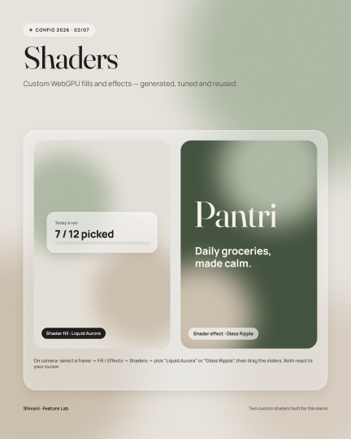
Shaders
A living background for the glass
I wrote two custom WebGPU shaders: an animated "Liquid Aurora" fill and a cursor-following "Glass Ripple". The glass needs something soft behind it; a shader does that without heavy image files.
A self-initiated grocery and pantry app, born from conversations with home cooks I met at a cooking competition in Dallas. It answers the question they kept coming back to: what can I make for dinner tonight with what's actually in my kitchen? This page shows the research, the scope I chose, why it looks the way it does, and how the Figma file is built.
Get the Figma file on Community ↗

Most grocery apps help in one moment: the list helps in the store, a pantry tracker asks you to type in everything you own, and a recipe app assumes your kitchen is fully stocked. Real cooking doesn't happen in those moments. It happens at 6 pm, in front of a half-empty cupboard, with kids who want dinner.
The USDA estimates that 30–40% of the US food supply is wasted, and households are the biggest single source. A lot of that waste starts with not knowing what's at home, and with recipes that send you out for ingredients you don't really need.
Problem statement: home cooks need one place that knows what they have, suggests what they can make with it, and offers swaps for what's missing, so they can cook tonight without another store run.
I took part in a cooking competition in Dallas, and the conversations I had with other home cooks there became the starting point. Many of them cook every day for families, often across more than one cuisine. Talk kept coming back to the same frustrations, so I wrote them down and later grouped them into themes.
These were informal conversations, not structured interviews, so I've paraphrased themes rather than quoting anyone. They gave me a strong direction, not proof. That's why every decision below comes with an assumption to test, and why the next step is a structured round of interviews and a usability test.
| Assumption | Risk if wrong | How I'll test it |
|---|---|---|
| People will trust dinner ideas that start from their own pantry | High: it's the core of the app | Concept test with 5–6 home cooks: would you cook this tonight? |
| A suggested swap is more useful than adding the item to a list | High: drives the recipe match | Show both options on real recipes; record which one people pick |
| Typing in the pantry is why trackers get abandoned | High: receipt scan is the bet | One-week diary: items logged by hand vs. skipped |
| Filtering by "who's eating" (kids, adults) matters more than by diet | Medium: shapes the filters | Card sort of filter options with parents |
A solo concept can grow forever, so I scoped it to one loop: plan, shop, store, cook. Every screen had to move someone to the next step of that loop. Anything that didn't was cut, even if it was trendy.
I also worked within real constraints. On Figma's Starter plan a file gets 3 pages and one mode per variable collection. Instead of fighting that, I structured the file as Cover, Design system and Screens & prototypes, and planned dark mode as a second mode on the same semantic tokens, ready to add on a paid plan.
Conversations with home cooks; grouped what I heard into four themes.
Journey map of the grocery loop, problem statement, assumptions and the MVP scope.
Four tabs that follow the loop, plus one Add button in the middle for the most frequent task.
Variables, styles and components before any screen, so every screen is built from instances.
Smart Animate flows, Figma Motion timelines, a contrast audit and a test plan.
| Stage | Plan | Shop | Store | Cook |
|---|---|---|---|---|
| Doing | Writes a list from memory | Walks the aisles, guesses quantities | Pushes new food in front of old | Decides dinner at 6 pm from what's visible |
| Feeling | Rushed | Unsure | Neutral | Stuck |
| Pain | "Do we still have rice?" | Two people, two lists, duplicates | Nothing records what was bought | The recipe needs things you don't have |
| Opportunity | A pantry-aware list | One live list, grouped by aisle | Receipt scan restocks the pantry | Cook from your pantry, with swaps |
| Decision | What I considered | Why this one | Trade-off |
|---|---|---|---|
| Swaps before shopping Research theme 3 | Add every missing ingredient straight to the list | The cooks wanted to cook tonight, not go out again. A swap ("use yogurt instead of sour cream") keeps dinner possible. | Swaps need good data and can change the dish, so each one says what changes. |
| One Add button, three ways in Hick's · Fitts's law | An add field on every screen; separate scan and voice buttons | One 56 pt target in thumb reach, and three options is a choice you make at a glance. | Adding from the List costs a tap, so the List keeps its own inline add bar. |
| Group the list by aisle Chunking · Jakob's law | A flat list in the order items were added | Matches how people walk a store; small groups are easy to scan with one hand. | Aisles differ by store, so aisle numbers are optional data. |
| Home opens on the unfinished task Zeigarnik · goal-gradient | A dashboard of equal tiles; a recipe feed | "7 of 12 picked" with a Resume button is what people come back for. | With nothing in progress, the slot becomes "Plan dinner". |
| Color only for urgent items Von Restorff · WCAG 1.4.1 | A traffic-light color on every item | On a calm screen, the few clay items stand out. Every tag also says "1 day". | Fresh and "a week left" look alike; the freshness bar carries that detail. |
| The scan sorts storage Tesler's law | Asking people to file every scanned item | The system holds the complexity, so restocking is one tap. | Wrong guesses happen, so Review stays one tap away. |
This screen came straight from the third research theme. Pick a recipe from YouTube or a cookbook, and Pantri checks it against your pantry. Instead of a shopping list, it leads with what you can do right now.
It reuses the existing system: glass panels, the Chip component for "who's eating" and cuisine filters, and the clay token for what's missing, with the label "missing" in text so color never carries the meaning alone.
Concept built in HTML for this page. Ingredients and swaps are illustrative.
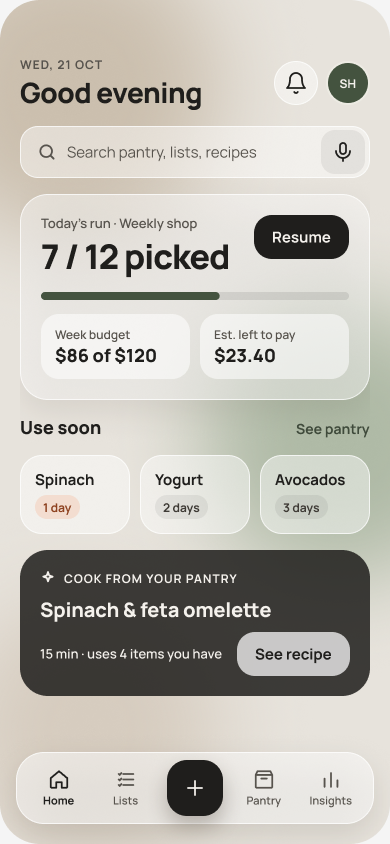
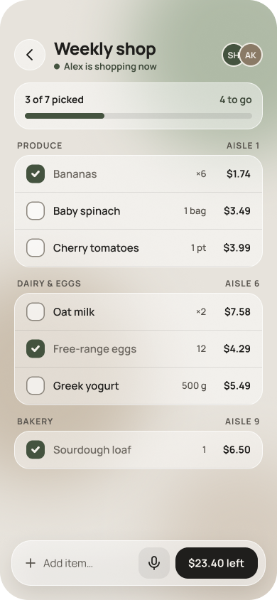
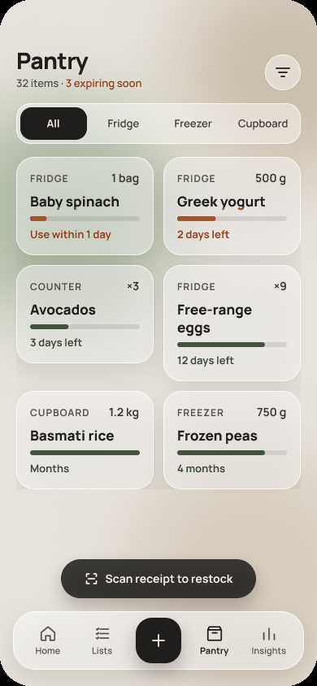
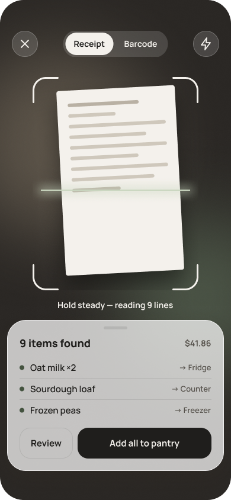
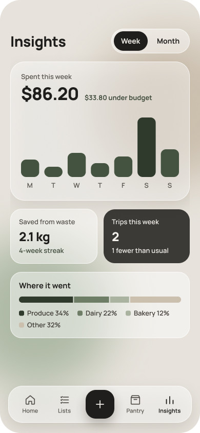
Kitchens are full of color: packaging, produce, food photos and recipe thumbnails. A bright, saturated app would compete with all of it. So the palette is warm neutrals, like stone, sand and linen, and the app steps back so the food and the few urgent items stand out.
Only two colors carry meaning. Sage means "go": primary buttons, checked items, progress. Clay means "use soon". I picked clay over red on purpose. Red reads as an error or danger, and an avocado that needs eating tomorrow isn't an emergency. It's a nudge.
Text is a warm near-black (#1F1E1C), not pure black, which is softer on a warm background and still gives 14.6 : 1 contrast.
Why glass? Glassmorphism is a trend, but here it does a job: it shows layers. The tab bar, sheets and cards float over a soft, blurred background, so you can tell what sits on top without heavy borders or shadows. That keeps the UI calm.
The trend version usually fails accessibility: transparent panels on bright gradients. I set rules instead. Glass is only for grouping surfaces, never behind text without a solid floor. Panels stay 45–60% white over a low-contrast neutral background, and I measured contrast on the blended color, which is what people actually see.
Type pairs Fraunces, a soft serif for headings that feels like a cookbook, with Manrope, a clear sans for everything you read quickly.
I built the system before any screen. Every screen is assembled from component instances, and every component binds its fills, strokes, gaps and corner radius to variables. That's what made the rest of the project fast: one change to a token updates every component and every screen.
| Collection | Count | What it holds | Set-up detail |
|---|---|---|---|
| Primitives | 27 | The raw palette: ink, stone, sand, sage, clay, alpha whites | Hidden from pickers (no scopes), so nobody can apply a raw hex by mistake |
| Color | 35 | Semantic roles: bg/glass, text/secondary, border/glass, icon/inverse… | Every value aliases a primitive; scoped to fills, text or strokes only |
| Spacing | 11 | A 4 pt scale, space/4 to space/32 | Scoped to Gap; bound to padding and item spacing in auto layout |
| Radius | 7 | radius/sm 9 to radius/full 999 | Scoped to Corner radius; bound per corner |
Each semantic variable carries web code syntax, so a developer inspecting a layer in Dev Mode sees the CSS variable name, not a hex value.
| Component | Variants | Properties | UX rule in its description |
|---|---|---|---|
| ListRow | Checked = True / False | Name, Qty, Price (text); nested Checkbox instance | Law of similarity: every row reads the same way |
| PantryCard | Status = Urgent / Fresh | Name, Location, Qty, Days; nested ProgressBar and Expiry Badge | Von Restorff: only urgent cards use clay |
| TabBar | Active = Home / Lists / Pantry / Insights | Built from TabItem instances plus the FAB | Jakob's law: a familiar bottom bar |
| IconButton | Glass / Tonal / FAB | Icon: instance swap from a 15-icon set | Fitts's law: 44 pt minimum, FAB 56 pt |
| SectionHeader | — | Title (text); Show link (boolean) | Proximity: label sits with its group |
| ProgressBar | 15 / 35 / 60 / 80 / 100% | Fill uses a Scale constraint, so it resizes with the bar | Goal-gradient: visible progress |
| Button · Chip · Badge | 3 · 2 · 2 styles | Label (text) | One primary action per screen |
Semantic tokens point at primitives. To warm the whole palette, I only edit the 27 primitives; all 35 semantic colors follow, across every screen.
Text colors only show up in the text picker, gaps only in gap fields. Fewer wrong choices meant fewer fixes, and it would help anyone else using the file.
Text, boolean and instance-swap properties keep the variant count small. TabItem has 2 variants, not 2 × 4 icons × 4 labels.
PantryCard nests ProgressBar and Badge. Fixing the bar once fixed every card in the pantry.
The glass look is one effect style (background blur 24 + soft shadow). Applying it is one click, and tuning it updates every panel.
Each component description states the UX rule it follows, so the reasoning shows up in Dev Mode and in reviews, not in a separate deck.
I worked with Claude, connected to Figma, to script the repetitive set-up: creating the variable collections, generating component variants and placing keyframes. The research, scope, palette, rules, layouts and every design decision are mine, and I reviewed and adjusted everything it built. It saved hours of clicking, not thinking.
A small, interactive copy of the components page. Select a layer or click anything on the canvas to see its variables, auto layout and properties, the way they're set up in the real file. Purple fields are bound to variables.
I prototyped the three moments where feedback matters most: first as Smart Animate flows for testing, then as timeline animations in Figma Motion for handoff. Each one confirms an action within the 400 ms the Doherty threshold suggests.
| Moment | What moves | How it's built | Why |
|---|---|---|---|
| Check off an item | Checkbox springs 1 → 1.18 → 1, the line strikes through, the counter and bar update | Smart Animate between ListRow variants; spring easing | Instant confirmation; progress pulls toward finishing |
| Scan to pantry | Scan line sweeps, items pop in a 120 ms stagger, the sheet rises | After-delay trigger (1.6 s), then Smart Animate | Shows the system is working, then hands back control |
| Quick add | The + button grows into the sheet: width, height, radius and position together | Matching layer names so Smart Animate morphs one into the other | The sheet visibly comes from what you tapped |
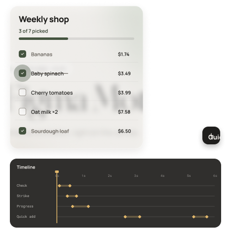
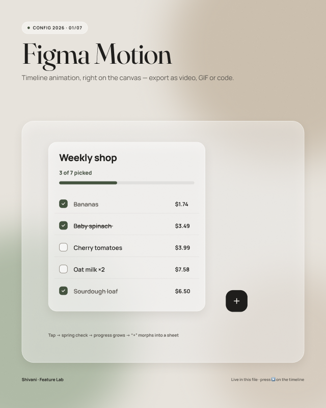
Every trend is a tool with a cost. For each one I asked: what problem does it solve for these cooks, what does it usually break, and when would I drop it?
| Trend | The job it does in Pantri | What it usually breaks | My guardrail |
|---|---|---|---|
| Glassmorphism | Shows what sits on top: bars, sheets, cards | Text contrast | Solid floor behind text, contrast measured on the blend, Reduce Transparency fallback |
| Quiet, warm neutrals | Lets food and urgent items stand out in a busy kitchen | Hierarchy can go flat | Only two meaning colors; size and weight carry the rest |
| AI suggestions | Turns "what's in my pantry" into "what's for dinner" | Trust: suggestions that ignore real life | Shows why ("uses spinach before it expires"), always offers a swap or a no |
| Micro-interactions | Confirms a tap when hands are busy | Slowness and distraction | Under 600 ms, only on actions, off with Reduce Motion |
| Bento cards and widgets | Home shows three answers at once: the run, use soon, dinner | Everything gets equal weight | One card leads; the rest support it |
| Token-driven theming | Dark mode or a new brand without redrawing | Token sprawl | Two layers only (primitive → semantic), with scopes |
Instead of demoing features for their own sake, I used Pantri as a test bed and asked what each new tool could do for this product. Some became part of the work, others are experiments I'd keep exploring.

I wrote two custom WebGPU shaders: an animated "Liquid Aurora" fill and a cursor-following "Glass Ripple". The glass needs something soft behind it; a shader does that without heavy image files.
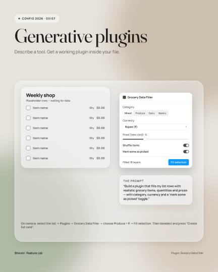
A working plugin that fills list rows with realistic grocery items, quantities and prices. Testing a list full of "Item 1" hides real problems like long names.
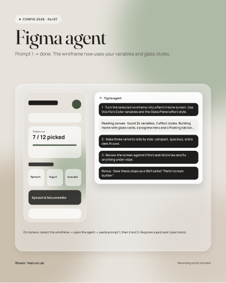
An experiment handing the agent repetitive tasks like making variants and renaming layers, while layout and judgment stay with me.
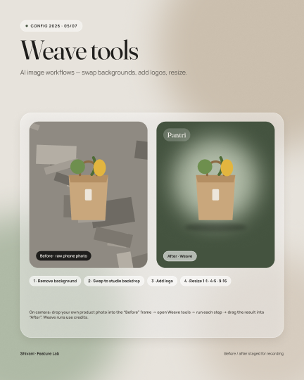
Exploring generated food images for recipe cards, so concepts don't depend on stock photos that never match the dish.
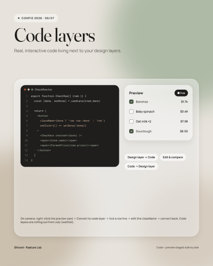
A live code layer on the canvas, to check how a component behaves with real interaction before handoff.
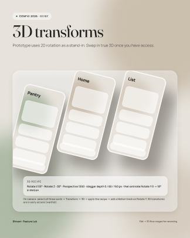
Tilted device layouts for the cover and Behance shots, built natively instead of in a separate 3D tool.
Glassmorphism is known for failing contrast. I measured every text pairing against the blended glass color, not the raw token, because that is what people actually see.
| Pairing | Ratio | Needs | Result |
|---|---|---|---|
| Primary text on glass | 14.6 : 1 | 4.5 : 1 | AA pass |
| Secondary text on glass | 6.7 : 1 | 4.5 : 1 | AA pass |
| Clay "1 day" tag | 5.4 : 1 | 4.5 : 1 | AA pass |
| Light text on sage button | 7.3 : 1 | 4.5 : 1 | AA pass |
| Checkbox border on glass | 3.2 : 1 | 3 : 1 (non-text) | Pass, narrow margin |
The prototype is ready for a moderated test with 5–6 home cooks, ideally including the people whose stories started this. I set the targets before testing, so the results can prove the design wrong.
| Task | Metric | Target | Tests which decision |
|---|---|---|---|
| "Find something for dinner tonight the kids will eat" | Time and success | Under 60 s, 5 of 6 | Cook from your pantry, filters |
| "This recipe needs heavy cream. What can you do?" | Picks swap vs. buy | Swap found unaided | Swaps before shopping |
| Add "2 lemons" to the list | Time on task | Under 5 s | One Add button |
| Restock the pantry after a shop | Task success | 5 of 6 unaided | Receipt scan sorting |
| Overall | SUS score | 80 or more | The whole experience |
After launch I'd track meals cooked from pantry suggestions, swaps accepted, and items marked "used" before expiry. The north star is food saved from waste per household.
Talking to cooks at a competition, not in a meeting room, showed me the real question is "what's for dinner?", not "how do I organize my list?". That shifted the whole product toward cooking.
Putting the UX reasoning in each component's description made reviews faster. The why travelled with every instance.
Run structured interviews and the test above. Validate the swap and scan bets first, since everything downstream depends on them. Then add dark mode as a second token mode.
Pantri is a self-initiated concept by Shivani Harode, 2026. Research came from informal conversations and is treated as direction to validate. The food-waste figure is the USDA's estimate.